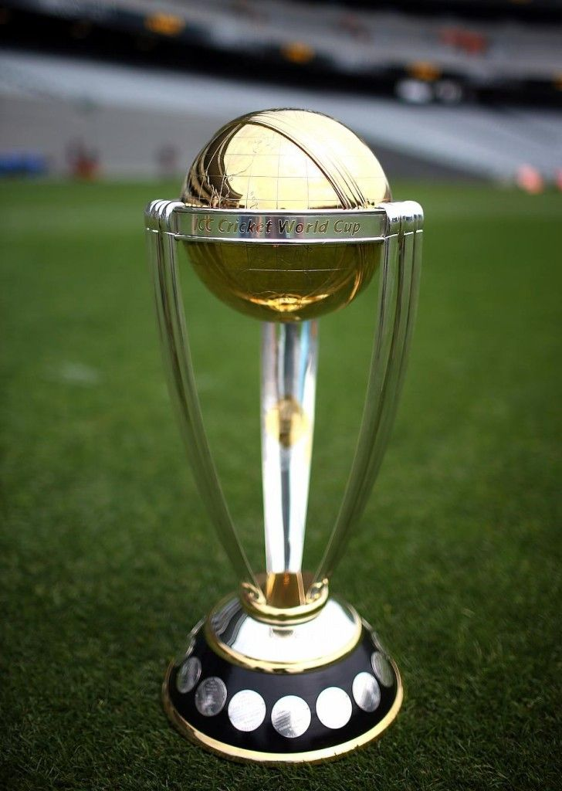
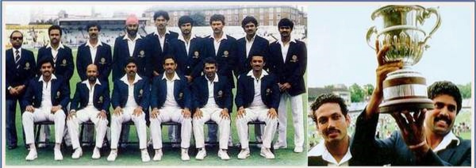

WORLD CUP TROPHY

INDIA
2011 world cup

ENGLAND
1983 world cup


The format for the tournament will be a single group of 10 teams, with each team playing the other nine once, and the top four at the end of the group phase progressing to the semi-finals. The 10-team tournament has gained criticism due to the lack of Associate teams in the tournament. Given the increase of the Test-playing nations from 10 to 12, with the admission of Ireland and Afghanistan in June 2017, it will be the first World Cup to be contested without all of the Test playing nations being present, and after the elimination of all the Associate teams at the qualifying tournament, this will be also be the first World Cup to feature no Associate members.
Following the 2019 Pulwama attack, several former Indian players and the Board of Control for Cricket in India (BCCI) called for the boycott of the group match fixture between India and Pakistan, wanting to ban the Pakistan cricket team from playing in the tournament. However, after conducting a press meet in Dubai, the International Cricket Council (ICC) rejected the BCCI's statement regarding banning Pakistan from the World Cup and assured that the scheduled match will go ahead as planned despite the ongoing standoff between the two nations.
India, led by Virat Kohli, will be one of the favourites to lift the trophy, though hosts England and Australia are likely to offer a stiff challenge to India's charge. All eyes will be on the crucial No 4 slot in the middle order. India have tried multiple players on that spot since 2015 World Cup, but none has been able to make that No 4 place his own.Kedar Jadhav, MS Dhoni and Hardik Pandya form the backbone of the middle-order, but India will rely heavily on their top three of Rohit Sharma, Shikhar Dhawan and skipper Virat Kohli to do the bulk of the scoring.India will open their campaign against South Africa on 6 June.
Australia captain Aaron Finch believes David Warner will enter this year's World Cup desperate to prove himself as the disgraced batsman prepares to rejoin his teammates after a ball-tampering ban.Warner has been in red-hot form in the India Premier League after completing a 12-month suspension for cheating, averaging 69.20 in 12 innings, including a century and eight fifties.